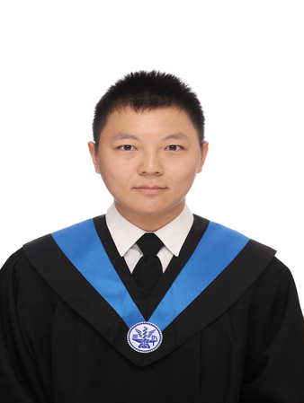

Metalens Principle
超穎透鏡利用次波長尺度奈米結構調控局部相位，藉由空間相位梯度改變出射光的波前，使入射光在指定位置聚焦。相較傳統曲面透鏡，可利用平面奈米結構實現高數值孔徑與緊湊化光學元件。
研究高 NA 超穎透鏡之 metagrating 設計與基因演算法最佳化，熟悉 Lumerical FDTD、Python 與 MATLAB，並具備微奈米製程、光電量測與數據分析經驗。希望建立從元件設計、模擬、製程到量測驗證的完整開發能力。


超穎透鏡利用次波長尺度奈米結構調控局部相位，藉由空間相位梯度改變出射光的波前，使入射光在指定位置聚焦。相較傳統曲面透鏡，可利用平面奈米結構實現高數值孔徑與緊湊化光學元件。
依局部繞射條件將透鏡劃分為不同環帶，配置對應 unit-cell 結構，並考量最小線寬等製程限制，以兼顧高角度偏折能力與可製造性。
使用 Python 撰寫 Genetic Algorithm，最佳化奈米柱直徑、間距與相關幾何參數，再以 Lumerical FDTD 評估繞射與聚焦性能，建立自動化迭代最佳化流程。

TSRI & NYCU Nano Facility
具備光學、電性與頻率響應等元件量測經驗，並能進行量測資料整理、比較與結果分析。
使用 Blender 建立光電量測設備與完整實驗架構之 3D 模型，用於研究簡報、量測架構視覺化與設備配置說明。